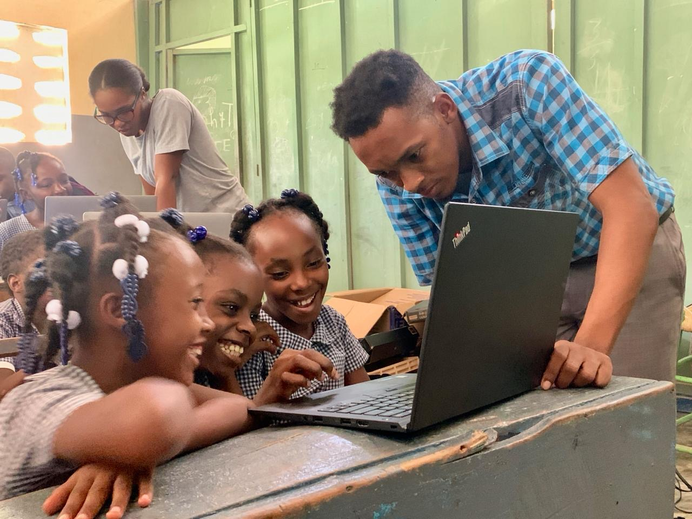

voir mes experiences |
Me Contacter
A propos de moi

Formation
Etudiant en informatique 2022 - 2025
Experience
Haiti Projects & PKF
Spécialité
Informatique Bureautique
localisatin
Nippes,Fond - Des - Blancs
@ Riodin Maquingson.Tous droits reservés.